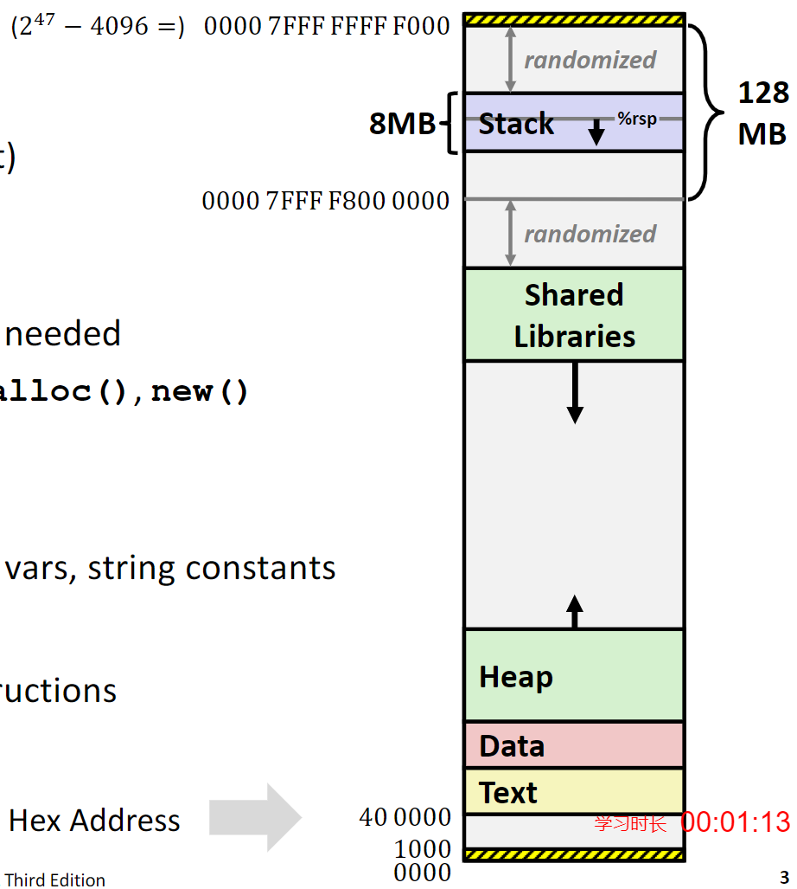
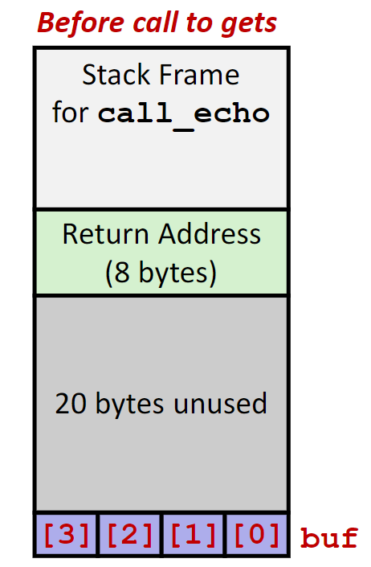

程序的机器级表达——高级话题
Linux内存分配

内存中一般被分配为下列积几个部分：
-
栈
- 程序运行时的栈大小，一般最大的栈为8MB
- 程序中的本地变量一般就放在这个地方
-
堆
程序中按照需要分配的动态内存空间，比如
malloc和new分配的空间。 -
数据
静态数据存放的空间，比如程序中的全局变量，静态变量，还有程序中的字符串常量。
-
共享库
程序共享的运行时库的存储位置，只读的可执行代码。
一些比较大块的内存分配也会在这里进行。
栈溢出例子
int recurse(int x)
{
int a[1<<15];
printf("x = %d. a at %p\n", x, a);
a[0] = (1<<14)-1;
a[a[0]] = x-1;
if (a[a[0]] == 0)
{
return -1;
}
return recurse(a[a[0]] - 1);
}
这个递归函数每次在运行的时候都会在栈上分配128KB的空间，当递归次数太多的时候，这个程序就会崩溃推出，报出Segmentation fault。
缓存溢出
漏洞
在访问数组的时候，访问的地址超过数组分配的空间，就被称为缓存溢出漏洞。
在一般情况下，输入字符串的程序十分容易出现这个问题，输出的字符串长度很容易超过程序中分配空间的大小。尤其是如果输入的字符串中包含一些可执行的二进制代码，就会让程序执行一些意外的代码，而往往这些代码不会是善良的。
木马、蠕虫和病毒
这是三种不同种类的恶意软件，在最开始是按照他们的传播方式分类的，但是随着时间的流逝，三者之间的界限正在变得模糊。
- 木马：通过引诱人们进行点击进行传播的软件，往往在电子邮件附件和网络中下载的文件中发现
- 蠕虫：可以自行进行复制和传播，这个过程是完全自动的
- 病毒：夺取已安装软件的控制权
库函数
在C语言中存在不少关于字符串和输入的库函数都是不安全的。比如下面的这个例子gets函数
char* gets(char* dest)
{
int c = getchar();
char *p = dest;
while(c != EOF && c != '\n')
{
*p++ = c;
c = getchar();
}
*p = '\0';
return dest;
}
仔细分析这个函数，没有任何对于输入字符数量的限制，如果输入的字符数量大于了传入函数的数组大小，输入的字符就会开始破坏栈上的数据。
scanf和类似的sscanf、fscanf函数在处理%s的时候也存在类似的问题。
strcpy、strcat两个字符串操作函数也存在着相同的问题。
溢出攻击的原理
我们先给出一个存在溢出攻击可能的函数：
void echo()
{
char buf[4];
gets(buf);
puts(buf);
}
我们在下面这个函数中调用echo函数：
void call_echo()
{
echo()
}
为了方便分析，先给出这两个函数的汇编代码：
00000000004006cf <echo>:
4006cf:48 83 ec18 sub $0x18,%rsp
4006d3:48 89 e7 mov%rsp,%rdi
4006d6:e8 a5 ffffff callq400680 <gets>
4006db:48 89 e7 mov%rsp,%rdi
4006de:e8 3d feffff callq400520 <puts@plt>
4006e3:48 83 c4 18 add $0x18,%rsp
4006e7:c3 retq
4006e8:48 83 ec08 sub $0x8,%rsp
4006ec:b8 00 00 00 00 mov$0x0,%eax
4006f1:e8 d9 ffffff callq4006cf <echo>
4006f6:48 83 c4 08 add $0x8,%rsp
4006fa:c3 retq
然后画出内存中空间分配的示意图：

虽然在程序中的字符数组只有4个字符的大小，但是汇编代码中给这个函数分配了0x18个字节的空间，但是这并不影响这段代码仍然是危险的，如果输入的字符串当长于24个字符的时候，栈上的数据就开始被破坏。而攻击的关键就在这里，这里的数据是函数的返回地址，如果我们输入的字符串中这里的数据”恰好“是一段可执行代码的地址，那在这个函数结束之后，程序就会开始执行意料之外的程序。
补丁
不使用具有漏洞的函数
解决问题的最好办法就是消除问题，在程序中不要编写这样的代码就可以避免所有的问题。比如，在使用运行时库的时候，使用含有长度限制的函数，比如
- 使用
fgets而不是gets - 使用
strncpy而不是strcpy
系统级的措施
虽然不写错误的代码是最完美的解决方案，但是人总是要犯错的。不过我们可以在操作系统上添加一些限制。
- 随机的栈地址